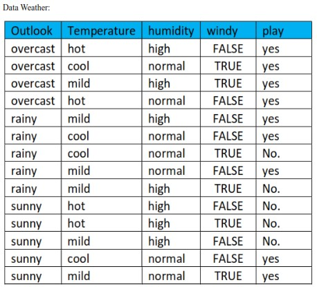
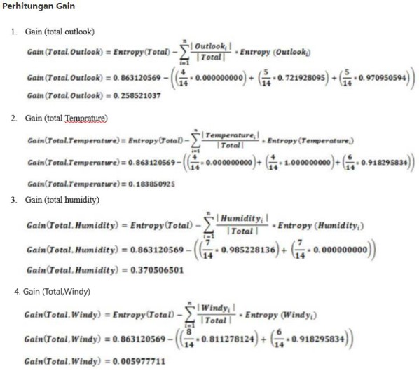
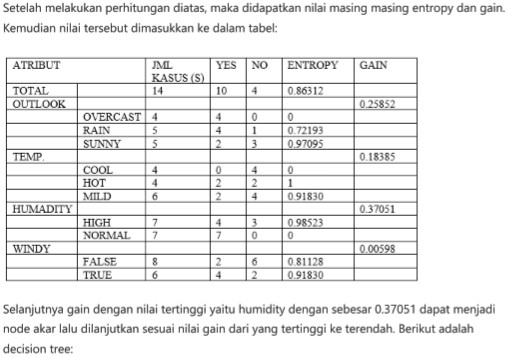
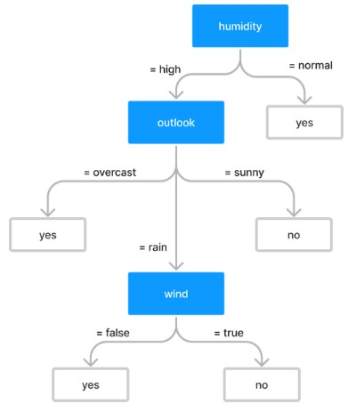
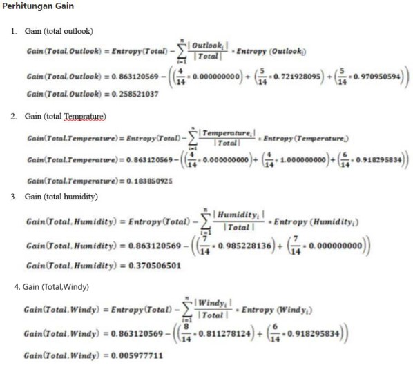
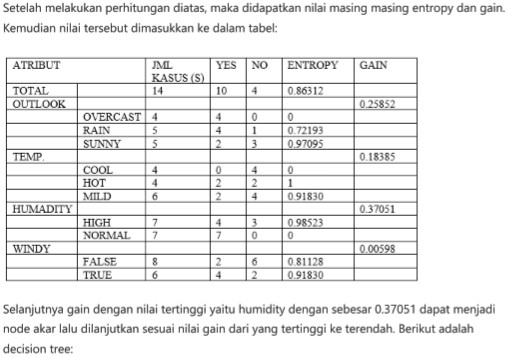
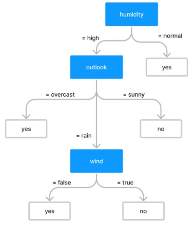

DECISION TREE DATA WEATHER#
Classification Data Weather#
-

 





Decision Tree Data Weather Menggunakan Python#
## import dependencies
from sklearn import tree #For our Decision Tree
import pandas as pd # For our DataFrame
import pydotplus # To create our Decision Tree Graph
from IPython.display import Image # To Display a image of our graph
#Create the dataset
#create empty data frame
golf_df = pd.DataFrame()
#add outlook
golf_df['Outlook'] = ['sunny', 'sunny', 'overcast', 'rainy', 'rainy', 'rainy',
'overcast', 'sunny', 'sunny', 'rainy', 'sunny', 'overcast',
'overcast', 'rainy']
#add temperature
golf_df['Temperature'] = ['hot', 'hot', 'hot', 'mild', 'cool', 'cool', 'cool',
'mild', 'cool', 'mild', 'mild', 'mild', 'hot', 'mild']
#add humidity
golf_df['Humidity'] = ['high', 'high', 'high', 'high', 'normal', 'normal', 'normal',
'high', 'normal', 'normal', 'normal', 'high', 'normal', 'high']
#add windy
golf_df['Windy'] = ['false', 'true', 'false', 'false', 'false', 'true', 'true',
'false', 'false', 'false', 'true', 'true', 'false', 'true']
#finally add play
golf_df['Play'] = ['no', 'no', 'yes', 'yes', 'yes', 'no', 'yes', 'no', 'yes', 'yes', 'yes',
'yes', 'yes', 'no']
#Print/show the new data
print(golf_df)
Outlook Temperature Humidity Windy Play
0 sunny hot high false no
1 sunny hot high true no
2 overcast hot high false yes
3 rainy mild high false yes
4 rainy cool normal false yes
5 rainy cool normal true no
6 overcast cool normal true yes
7 sunny mild high false no
8 sunny cool normal false yes
9 rainy mild normal false yes
10 sunny mild normal true yes
11 overcast mild high true yes
12 overcast hot normal false yes
13 rainy mild high true no
# Convert categorical variable into dummy/indicator variables or (binary vairbles) essentialy 1's and 0's
# I chose the variable name one_hot_data bescause in ML one-hot is a group of bits among which the legal combinations of values are only those with a single high (1) bit and all the others low (0)
one_hot_data = pd.get_dummies(golf_df[ ['Outlook', 'Temperature', 'Humidity', 'Windy'] ])
#print the new dummy data
one_hot_data
| Outlook_overcast | Outlook_rainy | Outlook_sunny | Temperature_cool | Temperature_hot | Temperature_mild | Humidity_high | Humidity_normal | Windy_false | Windy_true | |
|---|---|---|---|---|---|---|---|---|---|---|
| 0 | 0 | 0 | 1 | 0 | 1 | 0 | 1 | 0 | 1 | 0 |
| 1 | 0 | 0 | 1 | 0 | 1 | 0 | 1 | 0 | 0 | 1 |
| 2 | 1 | 0 | 0 | 0 | 1 | 0 | 1 | 0 | 1 | 0 |
| 3 | 0 | 1 | 0 | 0 | 0 | 1 | 1 | 0 | 1 | 0 |
| 4 | 0 | 1 | 0 | 1 | 0 | 0 | 0 | 1 | 1 | 0 |
| 5 | 0 | 1 | 0 | 1 | 0 | 0 | 0 | 1 | 0 | 1 |
| 6 | 1 | 0 | 0 | 1 | 0 | 0 | 0 | 1 | 0 | 1 |
| 7 | 0 | 0 | 1 | 0 | 0 | 1 | 1 | 0 | 1 | 0 |
| 8 | 0 | 0 | 1 | 1 | 0 | 0 | 0 | 1 | 1 | 0 |
| 9 | 0 | 1 | 0 | 0 | 0 | 1 | 0 | 1 | 1 | 0 |
| 10 | 0 | 0 | 1 | 0 | 0 | 1 | 0 | 1 | 0 | 1 |
| 11 | 1 | 0 | 0 | 0 | 0 | 1 | 1 | 0 | 0 | 1 |
| 12 | 1 | 0 | 0 | 0 | 1 | 0 | 0 | 1 | 1 | 0 |
| 13 | 0 | 1 | 0 | 0 | 0 | 1 | 1 | 0 | 0 | 1 |
# The decision tree classifier.
clf = tree.DecisionTreeClassifier()
# Training the Decision Tree
clf_train = clf.fit(one_hot_data, golf_df['Play'])
# Export/Print a decision tree in DOT format.
print(tree.export_graphviz(clf_train, None))
#Create Dot Data
dot_data = tree.export_graphviz(clf_train, out_file=None, feature_names=list(one_hot_data.columns.values),
class_names=['Not_Play', 'Play'], rounded=True, filled=True) #Gini decides which attribute/feature should be placed at the root node, which features will act as internal nodes or leaf nodes
#Create Graph from DOT data
graph = pydotplus.graph_from_dot_data(dot_data)
# Show graph
Image(graph.create_png())
digraph Tree {
node [shape=box, fontname="helvetica"] ;
edge [fontname="helvetica"] ;
0 [label="x[0] <= 0.5\ngini = 0.459\nsamples = 14\nvalue = [5, 9]"] ;
1 [label="x[7] <= 0.5\ngini = 0.5\nsamples = 10\nvalue = [5, 5]"] ;
0 -> 1 [labeldistance=2.5, labelangle=45, headlabel="True"] ;
2 [label="x[1] <= 0.5\ngini = 0.32\nsamples = 5\nvalue = [4, 1]"] ;
1 -> 2 ;
3 [label="gini = 0.0\nsamples = 3\nvalue = [3, 0]"] ;
2 -> 3 ;
4 [label="x[9] <= 0.5\ngini = 0.5\nsamples = 2\nvalue = [1, 1]"] ;
2 -> 4 ;
5 [label="gini = 0.0\nsamples = 1\nvalue = [0, 1]"] ;
4 -> 5 ;
6 [label="gini = 0.0\nsamples = 1\nvalue = [1, 0]"] ;
4 -> 6 ;
7 [label="x[9] <= 0.5\ngini = 0.32\nsamples = 5\nvalue = [1, 4]"] ;
1 -> 7 ;
8 [label="gini = 0.0\nsamples = 3\nvalue = [0, 3]"] ;
7 -> 8 ;
9 [label="x[2] <= 0.5\ngini = 0.5\nsamples = 2\nvalue = [1, 1]"] ;
7 -> 9 ;
10 [label="gini = 0.0\nsamples = 1\nvalue = [1, 0]"] ;
9 -> 10 ;
11 [label="gini = 0.0\nsamples = 1\nvalue = [0, 1]"] ;
9 -> 11 ;
12 [label="gini = 0.0\nsamples = 4\nvalue = [0, 4]"] ;
0 -> 12 [labeldistance=2.5, labelangle=-45, headlabel="False"] ;
}